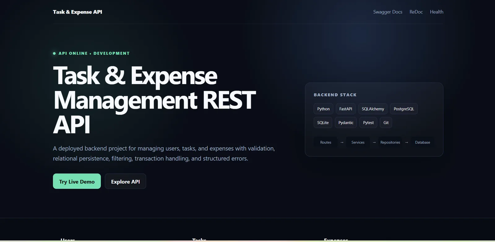
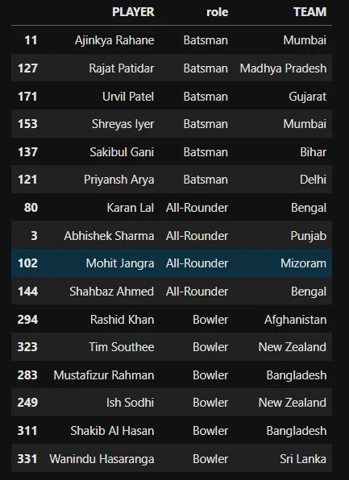
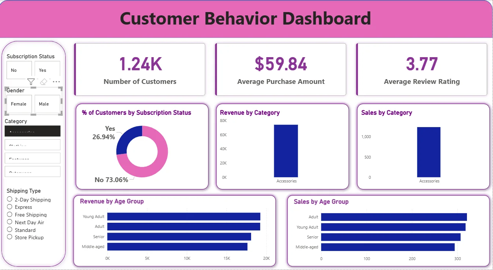
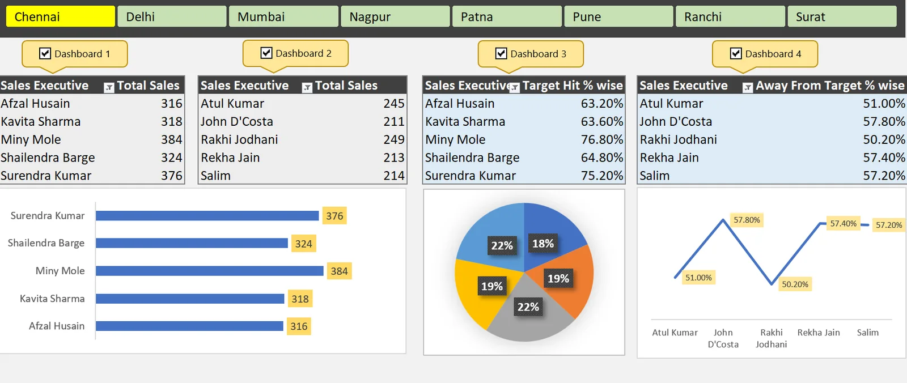

PROFILE
Sourabh Keragute
Python backend • data analytics • AI/ML
PYTHON ENGINEER • BACKEND • DATA • AI
MCA graduate specializing in AI & Data Science. I build backend systems, analyze real data and create practical AI/ML solutions with a strong focus on clarity, reliability and measurable outcomes.
from fastapi import FastAPI
app = FastAPI()
@app.get("/health")
def health():
return {"status": "ok"}01 / PROFILE
I’m most effective where code, data and product thinking overlap — building APIs, automating workflows, analyzing real datasets and presenting results clearly.
PROFILE
Python backend • data analytics • AI/ML
I work across backend development, SQL, data analysis, machine learning and dashboarding. My projects range from a deployed FastAPI REST backend and an AI resume-screening platform to business intelligence dashboards and sports analytics models.
FastAPI, REST APIs, SQLAlchemy, PostgreSQL, validation, testing and deployment.
Python, SQL, Power BI, DAX, Excel, EDA, KPI design and business insights.
scikit-learn, NLP, TF-IDF, clustering, regression, candidate ranking and scoring.
Strong AWS fundamentals across IAM, S3, EC2, RDS, VPC, Lambda, CloudWatch, API Gateway and billing concepts.
02 / SKILLS
Select a domain to see the tools I use and the kind of work I apply them to.
03 / JOURNEY
A timeline of the academic foundation, industry exposure and projects that shaped my current software + data profile.
SJB Institute of Technology, Bengaluru • Visvesvaraya Technological University
Python • SQL • Power BI • EDA • business reporting
Open experience details ↗End-to-end NLP-based candidate scoring, ranking and shortlisting platform.
View deployed project ↗Building production-oriented Python projects while strengthening backend engineering, DSA, SQL and system fundamentals.
04 / PROJECTS
Development projects include live deployments. Analytics projects include dashboards, case studies and source repositories.
AI-powered resume screening, ranking and candidate shortlisting platform built with Python and Streamlit.

Layered FastAPI backend for users, tasks and expenses with validation, relational persistence and tests.
This responsive portfolio: filters, case-study modals, certificate lightboxes, theme persistence and animated timeline.
Restaurant analytics for Bengaluru covering ratings, cuisines, pricing, ordering behaviour, table booking and customer engagement.

Objective squad selection using feature engineering, player impact scores, clustering, regression and role-based constraints.

End-to-end customer analytics with SQL business queries, feature engineering, Power BI KPIs and actionable segmentation insights.

Interactive executive-level sales view with city navigation, target-hit percentages, away-from-target analysis and KPI charts.
NLP + TF-IDF text classification with scikit-learn.
Python-based document reading and question-answering experiment.
Python fundamentals, data structures and file-based application logic.
Interactive Python console game built while strengthening programming fundamentals.
05 / CREDENTIAL VAULT
Each credential is stored as a record. Open any entry to inspect the original certificate in full resolution.
06 / ACHIEVEMENTS
Competitive performance and leadership experiences that shaped how I work in teams and under pressure.
Applied analytical thinking and problem-solving under time pressure.
Teamwork, discipline, consistency and competitive performance.
Led local tournament teams through strategic decisions and performance management.
07 / CONTACT
I’m open to fresher opportunities across Software Engineering, Python backend development, Data Analytics and AI/ML.